AI Literacy Workshop
Table of Contents
Overview
Artificial Intelligence is undoubtedly reshaping how we access, evaluate, and create information. From chatbots to research assistants, AI tools are becoming part of everyday academic life. Yet one of the challenges of AI is that the term itself is broad.
In its white paper Identifying and Scaling AI Use Cases (2025), OpenAI - the company behind the foundational GPT models - proposes six “primitive” use cases: content creation, research, coding, data analysis, ideation/strategy, and automation.
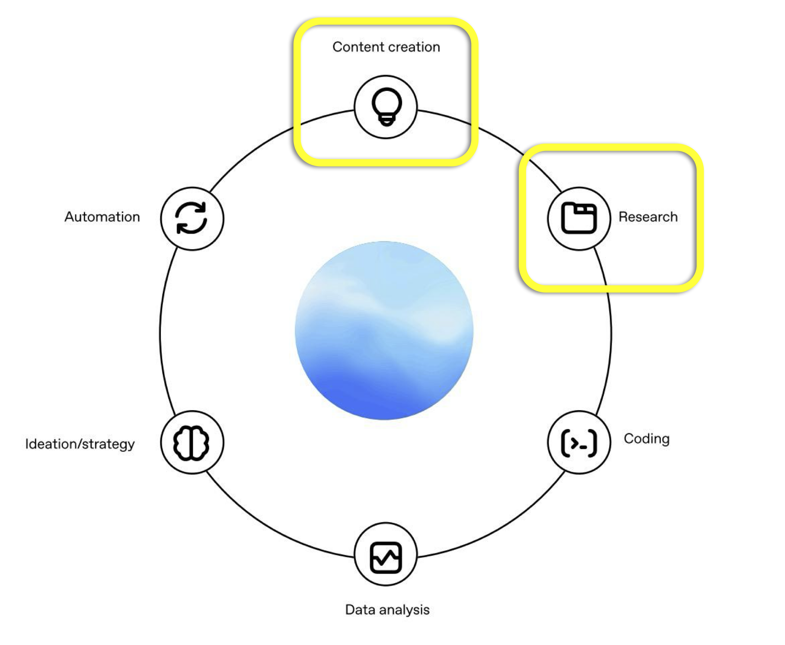
This framework provides a practical way to think about AI’s impact on higher education by focusing on the activities that shape scholarship and learning. In particular, the categories of content creation and research speak directly to the core work of colleges and libraries, where knowledge is collected and interpreted.
Much of this discussion about AI centers on generative AI and the Large Language Model (LLM) — the automated production of documents, essays and reports. What are we to make of machine-generated texts that mimic human authorship? What role should these documents play in the academic community?
At the same time, LLMs are transforming how we search for information. What new kinds of discovery become possible when search goes beyond lexical search? How might research change when answers can be synthesized from thousands of sources at once? What opportunities arise when relationships among documents are surfaced in seconds?
This teaching note will focus on AI’s influence on content creation (i.e., generative AI) and research at Baruch College.
AI at Baruch College
Baruch College AI Guidelines and Resources
Baruch College embraces the importance of integrating AI across teaching, research, and operations with a focus on transparency and responsible use.
The use of AI in coursework is determined by course instructor, as outlined in Baruch College’s Sample AI Use Policies for Course Syllabi.
These range of approaches towards AI include:
- Strictly Prohibited
- Limited Use for Editing
- Limited Use for Awareness
- AI Awareness with Critical Evaluation
- Guided Use with Attribution
- Integrated Use for Application, and (7) Co-created Policies with Students.
The use of AI in your coursework is contingent on the guidelines set by your course instructor; unauthorized use may be considered a violation of academic integrity.
Additional Links
Baruch Artificial Intelligence Resource Hub
Curated space for policy guidance and resources to support the ethical, informed use of AI.
Academic Affairs Statement of Approach to Artificial Intelligence at Baruch College
Commits to integrating AI into teaching, research, and operations in ways that are ethical, responsible, and aligned with its core values.
Guidelines for AI use at Baruch College
Establishes core principles for using generative AI at Baruch with Microsoft Copilot designated as the official, protected platform.
Affirms that unauthorized AI use is treated like any other integrity violation, with faculty setting clear syllabus rules and students responsible for compliance.
Generative AI
Generative AI refers to tools that can create new content - text, images, video, code, even music - based on written or spoken prompts. These systems are designed to recognize patterns in data and generate outputs that look and sound like human-created work.
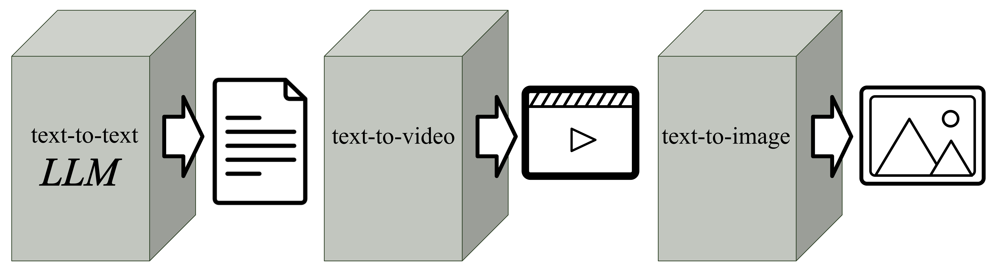
This gives students and researchers remarkable power: you can brainstorm ideas, visualize complex concepts, or rehearse how to explain them. But be cautious: just because AI can generate content does not mean that content is accurate, verified, or most importantly: appropriate to cite as an authority. Always consult your instructor or course syllabus to determine whether using generative AI is permitted in your coursework.
text-to-text Tools
| Tool | Description |
|---|---|
| Microsoft Copilot | Microsoft Copilot is an AI assistant built into Microsoft 365. Copilot functions as a traditional AI-powered chatbot enabling it to summarize, analyze, and generate text and code. Copilot is the default generative AI tool at Baruch College because the CUNY-secure deployment ensures that data stays within the protected institutional environment and is not shared externally. While Copilot is widely available to the public, students and faculty should access the data-secure version through Microsoft Office 365 on the web or local installation. |
| OpenAI ChatGPT | ChatGPT, powered by OpenAI’s GPT models, is widely regarded as the industry standard for conversational AI. Known for its versatility and fluency, it is a powerful general-purpose model that can generate, summarize, and analyze text across a wide range of domains. |
| Google Gemini | Gemini is Google’s multimodal model, designed to natively understand and work with text, images, video, and audio. It represents Google’s flagship LLM platform and integrates tightly with other Google products and services. |
| Anthropic Claude | Claude, developed by Anthropic, emphasizes safety and ethical alignment through an approach known as “Constitutional AI.” It is designed to reduce harmful outputs while still being a capable and versatile conversational model. |
| Meta Llama 3 | Llama 3 is Meta’s open-source family of Large Language Models, freely available for developers and researchers. It is widely used in academic and industry projects, offering strong performance with flexible licensing compared to commercial models. |
| Mistral | Mistral AI is a European startup developing powerful open-source and commercial LLMs, emphasizing efficiency and smaller models that run well on limited hardware. |
text-to-image Tools
| Tool | Description |
|---|---|
| Adobe Firefly | Adobe’s generative AI image tool integrated into Creative Cloud (Photoshop, Illustrator). Firefly emphasizes safe, commercially licensed image generation for design workflows. Credits are available through CUNY’s access to Adobe Creative Cloud. |
| OpenAI DALL·E | One of the first widely adopted text-to-image generators, DALL·E can create realistic or stylized images from text prompts. It is integrated directly into ChatGPT. |
| Stable Diffusion | An open-source text-to-image model, Stable Diffusion gives users and developers full control to run, fine-tune, and customize locally. |
| Hugging Face Diffusers | A library of open-source diffusion models (including Stable Diffusion) hosted on Hugging Face. Provides tools for developers and researchers to integrate text-to-image generation into applications. |
| MidJourney | Known for artistic and stylized outputs, MidJourney remains popular among artists and creative professionals. |
text-to-video Tools
| Tool | Description |
|---|---|
| OpenAI Sora | OpenAI’s text-to-video model that creates short, high-quality clips with detailed scenes and realistic motion. |
| Runway Gen-2 | Runway’s second-gen tool for generating and editing videos from text. Popular in media and design for its ease of use and editing features. |
| Pika Labs | Pika offers fast, stylized text-to-video generation. Built around a Discord community and web app for quick, low-cost clips. |
| Stable Video Diffusion | An open-source video diffusion model from Stability AI. Lets developers adapt text-to-video locally for custom needs. |
| Google Vids & Veo | Google’s Veo powers video creation in tools like Google Vids, producing short clips with AI-generated visuals, narration, audio, and effects directly from a text script. Unlike most tools, it integrates speech and video in a single workflow, so users don’t need to generate them separately. |
Large Language Models (LLM)
Artificial Intelligence is undoubtedly reshaping how we access, evaluate, and create information. From chatbots to research assistants, AI tools are increasingly part of everyday academic life. This teaching note focuses on a crucial piece of AI Literacy: understanding how large language models like ChatGPT, Gemini, and Claude work - and how they influence the way students and researchers discover, retrieve, and interact with information.
Although this note is focused on “AI Literacy,” the key part of understanding modern AI for information retrieval is maintaining a strong command of text-based Generative AI tools. This primarily means understanding the Large Language Model (LLM) with a focus on the inner-workings of popular chatbots powered by LLMs like OpenAI’s ChatGPT and Google’s Gemini.
The large language models that power popular technologies like ChatGPT and Gemini also drive many other AI tools discussed in this guide. These include specialized applications such as research assistants (e.g., Elicit) and consumer-facing Retrieval-Augmented Generation (RAG) tools (e.g., Google’s NotebookLM).
There are no doubt noteworthy developments in other frontiers of AI including advances in computer vision (e.g. self-driving cars, medical image recognition) and speech recognition (e.g. Amazon Alexa, Apple Siri), but in the domain of libraries and information literacy, “AI literacy” is a crucial skill that begins with a deep understanding of large language models and the popular models currently embraced by students and researchers.
Inside the Black Box: Understanding LLM Input and Output
Every time you use an AI chatbot like ChatGPT, you’re participating in a process that begins with your prompt and ends with a generated response. But what happens in between?
This process can be broken down into three steps: input, model, and output.
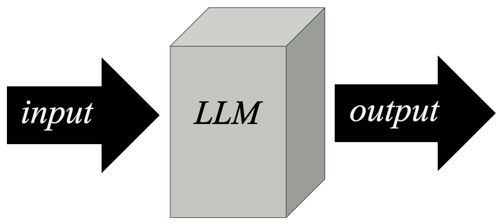
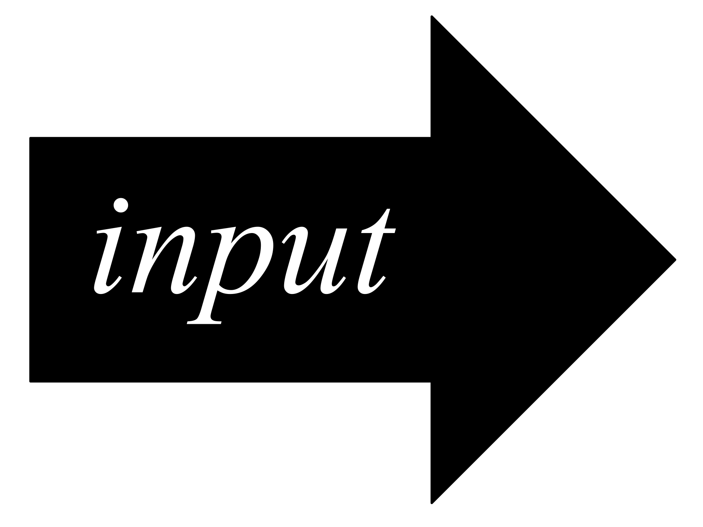
Input: The input is what you provide to the LLM, but it’s more than simple text limited by traditional lexical matching. Modern LLMs use Natural Language Processing (NLP) to understand the meaning and intent behind your query, going beyond simple keyword matching. To get the best results, you need to use effective prompt engineering practices. This involves carefully crafting your query with clear instructions, context, and constraints to guide the model’s output toward your desired goal. The quality of the input will influence the quality of the output.
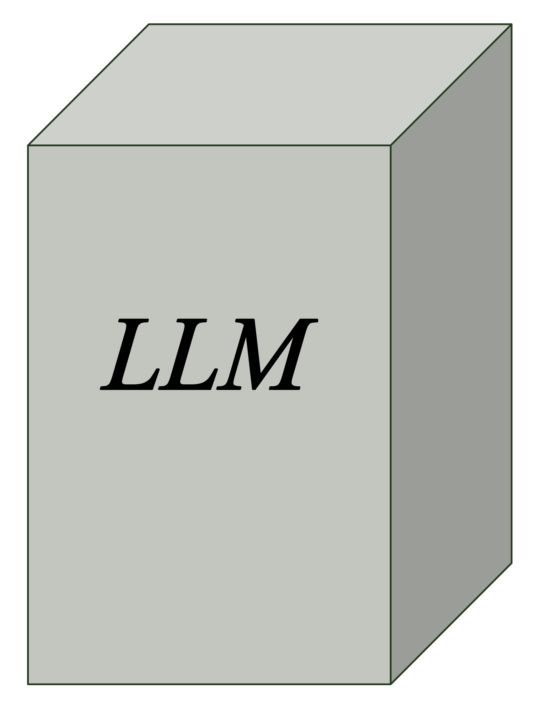
LLM: The central component here is the LLM, which acts as the “brain” of the operation. This is where the core of the AI technology resides. The LLM’s capabilities are a direct result of its training, a process where it learns patterns, relationships, and knowledge from a massive dataset. The volume of data required is immense, often consisting of trillions of words scraped from a wide variety of sources, including websites, books, and academic papers. This training phase is computationally intensive and is what allows the model to generate coherent and contextually relevant text.
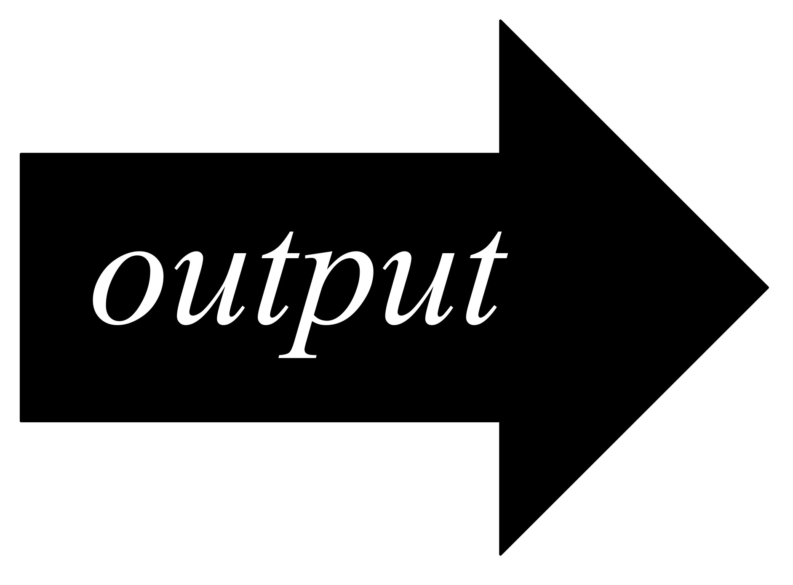
Output: The output is the response generated by the LLM. The quality and reliability of this output are ultimately determined by the data the model was trained on. Understanding the model’s training data is crucial for determining if you can trust the output. If the training data is biased, incomplete, or contains inaccuracies, the model may generate false or nonsensical information, a phenomenon known as a hallucination. Therefore, evaluating the output involves not only checking for factual accuracy but also considering the potential for bias and the model’s limitations.
Understanding What LLMs Know… and What They Don’t
To evaluate the output of a large language model, it’s essential to understand what data the model was trained on. For this, a powerful principle applies: “the data is the model.”
Most foundational LLMs are trained on massive collections of publicly available web content - things like Wikipedia, Reddit, open-access articles, and code repositories. However, they largely exclude the significant body of knowledge contained in pay-walled academic databases, dynamically generated web pages, and freely-accessible databases that aren’t easily crawl-able.
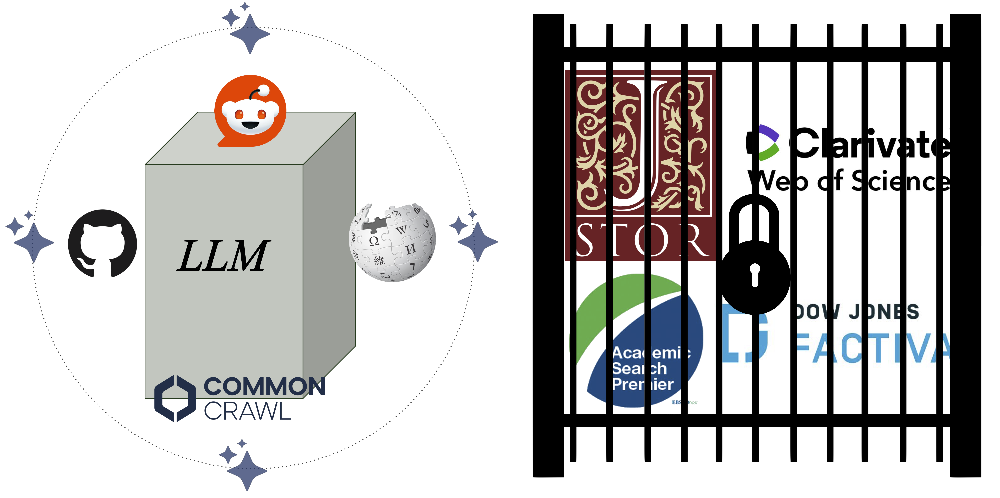
Furthermore, a good deal of the most granular, timely, or academically significant data - local demographic statistics, scientific datasets, legal records, archival government data, and even historical real estate trends - lives in what we call the deep web. While technically available online, this information often requires interaction with forms, lives inside JavaScript-heavy interfaces, or is structured in ways that automated crawlers (and thus LLM training pipelines) struggle to access. If a search engine did not index it, an LLM likely did not train on it.
As a result, when you ask an LLM a question, you’re interacting with a system that has learned from a specific and limited subset of the web - not the full breadth of human knowledge. That’s why LLMs sometimes hallucinate or fail to answer questions that rely on specialized or hard-to-reach information. They simply haven’t seen it.
Large Language Models are trained on vast collections of publicly available data, giving them a broad foundational knowledge that often aligns well with the needs of undergraduate students and general education.
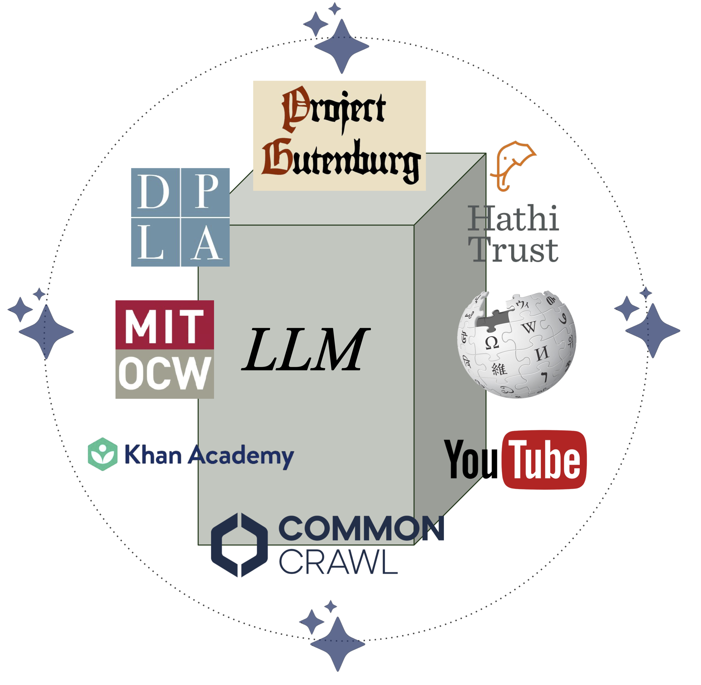
While this accessibility makes LLMs appealing as educational tools, their use in academic settings is still a topic of debate. Within the classroom, scholars and instructors continue to question how these tools will affect teaching, learning, and the development of critical thinking. As tools of research, LLMs need to be treated with caution.
It’s imporant to recognize the limitation of LLMs in conducting research. LLMs can be useful tools for brainstorming, summarizing, explanation and exploration - but they are not replacements for scholarly databases, specialized research tools, or the expertise of librarians. Valuable information remains in both library databases and the deep web - and navigating that terrain still requires human guidance and domain-specific resources.
The Dominant Large Language Models
In today’s AI landscape, OpenAI’s ChatGPT, Google’s Gemini, and Anthropic’s Claude currently stand as the three dominant Large Language Models available for public use.
They are all highly capable, general-purpose models that have been trained to understand and generate human-like text, allowing them to excel at a wide range of information tasks.
Note that LLM powered chatbots are all commercial products that operate under a business model. While commercial LLMs provide a “free” tier of usage, they also offer different tiers of service and are ultimately not free for full usage of all AI tools, features and applications.
At Baruch College, Microsoft Copilot is the preferred AI chatbot. Based upon OpenAI’s GPT-4 models, Microsoft Copilot is an AI assistant built into Microsoft 365 applications like Word and Excel. Similar to popular AI-powered chatbots like ChatGPT and Google Gemini, Copilot maintains a Large Language Model (LLM) powered chat feature that enables it to summarize information and answer questions,
Data privacy remains a significant concern for the use of many AI tools. As such, Microsoft Copilot is the default generative AI tool at Baruch College because all data submitted stays within the secure CUNY environment and is not shared or used to train external models.
Professional Applications of LLMs
Domain-specialized applications of LLMs are increasingly emerging across professional fields like law, accounting, finance, and medicine. Tools such as Casetext CoCounsel in the legal profession or BloombergGPT in finance illustrate how the same foundational models that power general-purpose chatbots can be tailored with proprietary or highly specialized datasets to meet professional needs. These tools work precisely because they embed domain-specific knowledge directly into the model’s training or retrieval pipelines, reinforcing the principle that “the data is the model.”
For example, an accounting or finance LLM only performs well if it has been exposed to financial statements, tax codes, regulatory filings, and historical market data. Specialized data like this often escapes the training of general LLM models such as Gemini and ChatGPT - demonstrating that what an AI system “knows” is inseparable from the data it has been trained on, underscoring the importance of always asking what sources underpin the model’s authority.
Retrieval Augmented Generation (RAG)
How RAG Expands the Capabilities of the LLM
While Large language models (LLMs) are undoubtedly powerful as reasoning and content creation tools, they are inherently static, meaning their knowledge is limited to the data they were initially trained on. This creates a significant problem when you need specialized, proprietary, or time-sensitive information, as a base LLM has no way of accessing this new data.
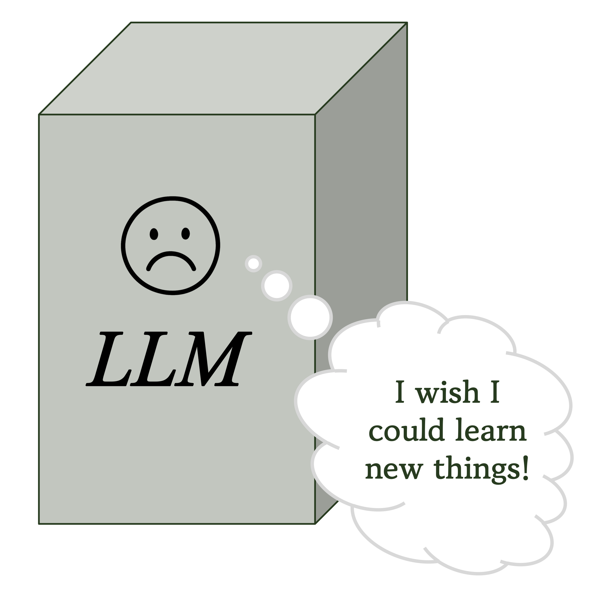
Retrieval-Augmented Generation (RAG) is an architectural approach that attempts to address this limitation. It enhances an LLM by giving it access to an external knowledge base, such as a database of academic papers or an up-to-date company wiki. The RAG system first retrieves relevant information from this external source and then uses that information as context to help the LLM generate a more accurate and current answer. This makes the LLM dynamic, allowing it to provide relevant responses that go beyond its original training data.
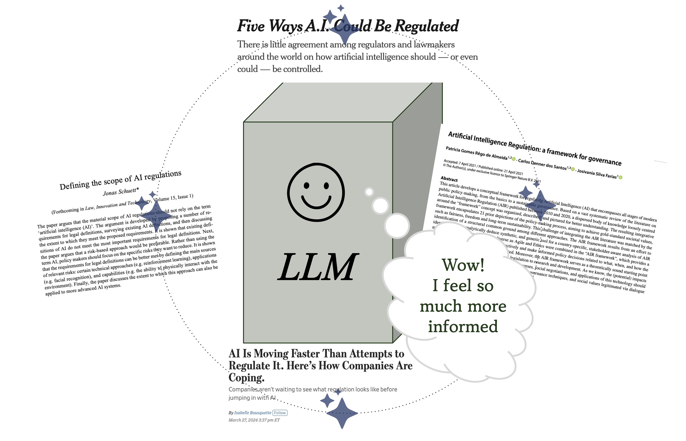
While it’s important to recognize that large language models are trained on static datasets and have a fixed knowledge cutoff, some platforms - including ChatGPT - use retrieval-augmented generation to dynamically access and incorporate up-to-date information from external sources. If you receive a message indicating that an LLM like ChatGPT is consulting the web:
…it means the model is augmenting its static training data with live search results to respond to prompts that require recent or otherwise unavailable information.
Google NotebookLM: RAG Powered Research Informed by Your Documents
Google’s NotebookLM is an user-friendly, AI-powered tool that helps with research and note-taking by using Retrieval-Augmented Generation to generate responses grounded in your own documents. Designed to operate through a simple interface, it lets users upload a variety of content - such as PDFs, Google Docs, Slides, websites, and text - to create a structured “notebook” of personal sources. From there, NotebookLM can generate summaries, explanations, and answers based specifically on those user-provided materials.
At its core, NotebookLM leverages Google’s powerful Gemini LLM. But the tool’s power comes from its ability to harness Retrieval-Augmented Generation - grounding the AI’s output in external data provided by the user. When you upload documents, NotebookLM retrieves relevant passages and incorporates them directly into responses. This ensures higher accuracy and reduces the risk of hallucinations because the AI’s answers are verifiably tied to your sources.
Here is a notebook trained on 4 documents related to prompt engineering:
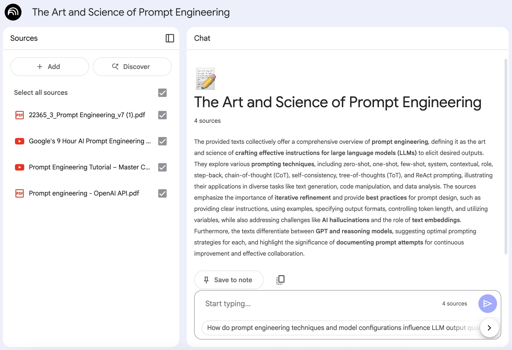
Your notebook can be enhanced by a variety of source and file types: .pdf files, URLs, YouTube Videos, pasted text (etc…):
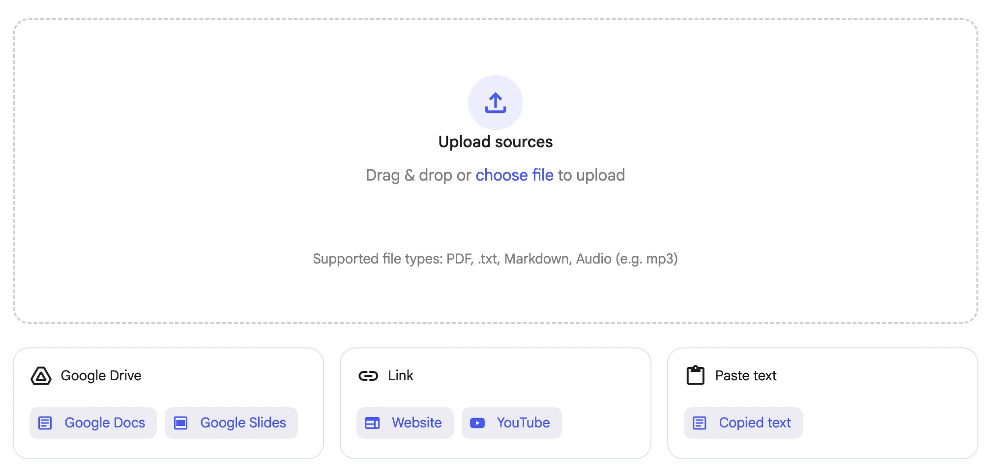
From here, you can query your notebook with prompts like:
How do prompt engineering techniques and model configurations influence LLM output quality?
Name three prompting techniques.
How do models handle context?
After submitting questions of this nature, Google NotebookLM will give you a variety of responses, including summaries, direct answers, analyses, and insightful connections, all generated specifically from your uploaded documents. A helpful feature is that it sources its answers, showing you exactly which passages in your files the information is sourced from.
AI Search
AI Assisted Research
AI tools powered by Large Language Models are reshaping research by moving beyond simple keyword matching. These AI search tools now interpret the meaning behind your questions, analyze large volumes of content, and deliver clear, summarized insights. As AI continues to advance quickly, it will likely transform how we search for, engage with, and understand information.
Smarter Searching: Use AI to Expand Your Keywords and Enhance Your Search
Traditional search, like a library catalog, finds resources by lexical matching - it directly matches your search terms with keywords in the resource’s metadata, such as its title or author.
A drawback of lexical matching is you can unknowingly miss potential resources unless you exhaustively search all relevant keywords:
A new AI-led innovation in resource discovery involves LLMs generating a collection of keywords that cast a wider net for relevant resources. When you craft your search strategy for your research, it can be helpful to use a LLM powered chatbot to help you with keyword creation:
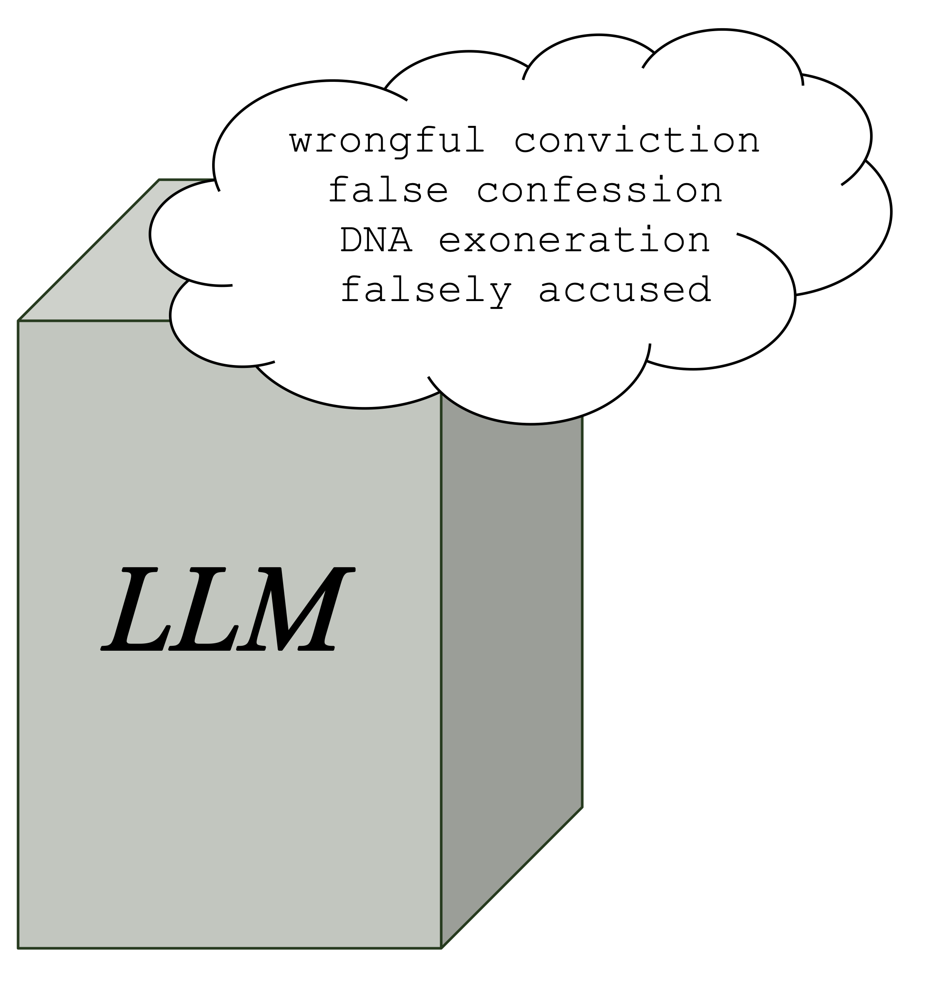
Instead of only searching for falsely accused in library research tools, you are now prepared to conduct a more robust search with wrongful conviction, false confession and DNA exoneration. This addition of semantically related keywords is important towards understanding how LLMs can help conduct a more exhaustive search of library resources.
Using AI to Build Search Strings
Once you’ve gathered a set of keywords, the next step is combining them into a structured search. This is another area where AI chatbots can be especially useful: they can take your list of terms and assemble them into complex Boolean search strings tailored for the tool you’re using.
Boolean logic (using operators like AND, OR, and NOT) underlies most research platforms, but the specific syntax often differs:
- Library catalogs may only recognize basic Boolean operators (AND, OR, NOT).
- Scholarly databases (like ProQuest, JSTOR, or PubMed) typically support advanced options such as quotation marks for exact phrases, wildcards (e.g., * or ?), and proximity operators (e.g., NEAR/3).
- General search engines like Google use their own conventions, such as the
site:operator for restricting results to specific websites or domains.
Because of these differences, it’s important to tell the chatbot which search tool you are building the string for. A search string that works in PubMed might not work in JSTOR or Google Scholar without adjustment.
The example shows how a chatbot can create a Google search string using the site: operator. This operator narrows results to particular publications. For instance:
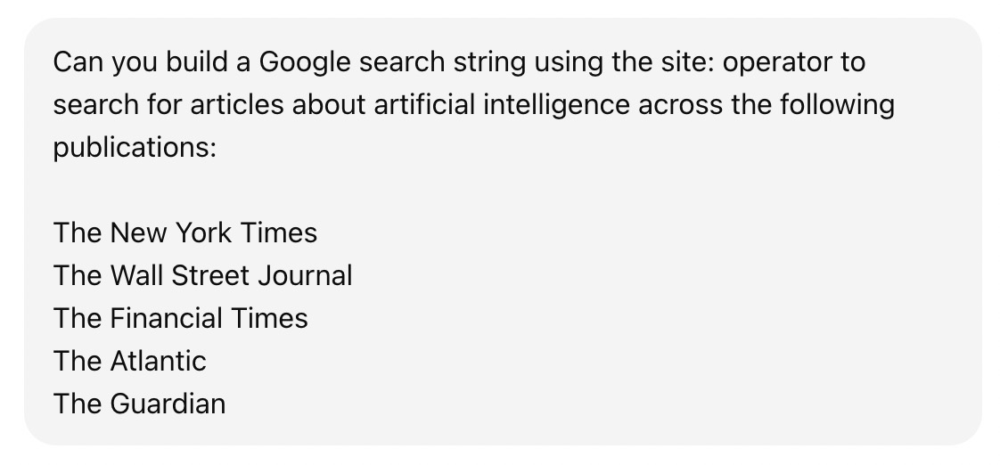
The above prompt should generate a search string similar to the following:
site:nytimes.com OR site:wsj.com OR site:ft.com OR site:theatlantic.com OR site:theguardian.com "artificial intelligence"
Deep Research: AI-Powered Search at Web Scale
If you were to have dozens of websites related to a topic you were researching:
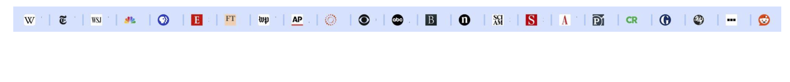
Or even a limitless ability to search hundreds of articles in high-quality news sites, like The New York Times:
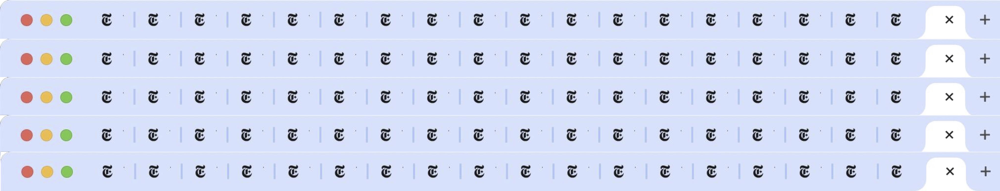
How much time would it take to invidivually review each of these open tabs?
It potentially could prove useful if you an automated assistant that could search, parse and interpret the relevance of each of these articles and web pages - all of which would be semantically related to your original search query. Additionally, what if the assistant was able to summarize and synthesize all of the information relevant to your query, and generate an exhaustive report with citations all linking back to the original sources?
This is the motivation behind a new research feature of the LLM-powered chatbots called “Deep Research.” Deep Research has become the accepted product term for this innovation in AI-assisted search and all the foundational LLMs - ChatGPT, Gemini, Claude - now offer this ability to comprehensively examine the web.
Deep Research is a tool accessible through the primary search box interface of the LLM-powered chatbots. Here is how you would access Deep Research through Google Gemini:
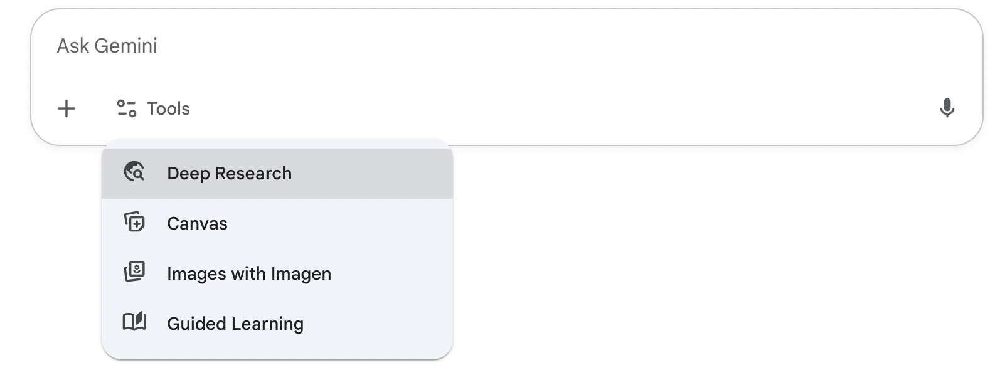
Let’s investigate the web for resources on short term rentals (e.g Air BnB) and their impact on local neighborhoods:
Once you structure a prompt for your Deep Research query, the tool will double check and ask specific, qualifying questions about what exactly you are searching for, and what resources the search should return.

As Deep Research scans the web and interprets the resources it returns, the tool will present a collection of sites that are being considered. Think of this as the visualization of having dozens (hundreds!) tabs open on your browser, and evaluating and synthesizing the information on each page.
Deep Research searches take consdierable time as: exhaustively examining the web, identifying sources by a wide semantic criteria, evaluating those resources and then synthesizing them into a report is a computationally demanding process. While researchers may be used to a search engine query taking a fraction of a second, Deep Research searches can take several minutes to complete.
Once completed, Deep Research will return a multi-page report summarizing its findings. Unlike traditional LLM chatbots however, everything in the report is cited and sourced in a bibliography that will include dozens of open web sources:
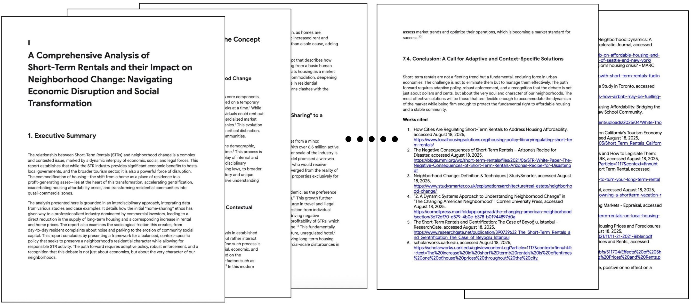
Understand the LLM-assisted search, analysis and synthesis of countless web pages is computationally expensive. As such, all of the popular LLM chatbots limit how many Deep Research searches you can perform. Here is a Deep Research quota from OpenAI’s ChatGPT:
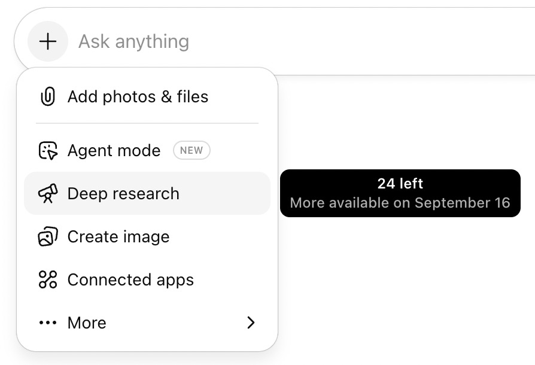
While the ability to exhaustively search the web and organize your findings into a comprehensive report is undeniably a marvel of AI-assisted search, recognize some of these tool misrepresent their coverage of academic and scholarly literature. Any papers, reports or findings - purported to be scholarly or peer-reviewed - will only be literature that is found freely available on the web. Deep Research tools do not collect any documents from licensed or proprietary databases (e.g. JSTOR).
AI and the Literature Review
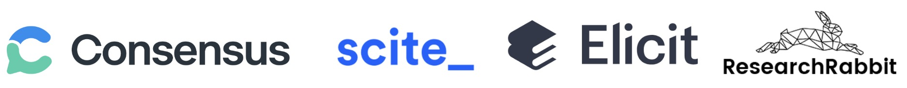
An AI research assistant is a tool powered by artificial intelligence that supports various stages of academic research, particularly literature reviews. These tools are designed to streamline the research process by automating time-consuming activities like finding relevant papers, summarizing key findings, and synthesizing information across multiple documents. They work by processing vast amounts of academic literature and using large language models (LLMs) to understand, organize, and promote relevant documents and information.
Most of these services are proprietary. While they often have a free tier to attract users, their full functionality is typically locked behind a paid subscription or license.
Notable AI Research Assistants include:
| Tool | Description |
|---|---|
| Consensus | This tool focuses on extracting and synthesizing information directly from research papers to answer specific questions, helping users quickly understand a consensus viewpoint on a topic. |
| Scite | Scite is known for its “Smart Citations,” which show how a paper has been cited by others, indicating whether it has been supported or contrasted by subsequent research. |
| Elicit | Elicit helps researchers automate parts of their literature review workflow. It finds papers, summarizes key takeaways, and extracts data from a set of search results. |
| ResearchRabbit | This tool is more of a “citation-based” discovery engine. It helps you visualize a network of research papers related to your initial input, finding connected authors, journals, and topics. |
AI research assistants are constrained by the academic literature they can access. AI research assistants cannot access articles behind a paywall or a database subscription. This means they cannot include research from many high-impact, subscription-based journals unless the specific article has been made open-access.
AI-Powered Search Engines
An AI search engine is a new kind of web search tool that goes beyond returning a list of links. Instead of simply matching keywords like traditional search engines, AI search uses Large Language Models (LLMs) to interpret the meaning behind your query. This allows it to perform sophisticated semantic searches - understanding context, nuance, and intent - and return direct answers that summarize and synthesize information from multiple sources.
| Tool | Description |
|---|---|
| Perplexity AI | Often considered the leader in AI Search, it provides a direct, cited answer to your query by synthesizing information from all across the web. |
| You.com | Offers a customizable search experience where you can choose which sources it draws from, including apps and websites. |
| Exa | Specializes in providing fast, semantic search results across large datasets. |
Popular search engines like Google and Microsoft Bing are also increasingly integrating AI techniques and Large Language Models into their core search products. This integration is representing a shift from “finding information” to “getting answers,” where the search engine acts as a more intelligent assistant rather than just a directory of web pages.
AI Assistants in Academic Databases
Once again, all the major Large Language Models are trained on vast amounts of publicly available internet data. However, these foundational LLMs do not have direct access to the rich, often paywalled, content within specialized library subscription databases such as JSTOR, Web of Science, or medical journals.
This means the future of AI in in-depth scholarly research won’t solely rely on a single, all-encompassing LLM. Instead, we’re likely to see the rise of specialized AI assistants embedded directly within individual library databases. Imagine: the “JSTOR AI assistant” or “Elsevier AI tools” designed to operate specifically on the vast content their platforms already host.
For researchers, this will mean adapting to a new way of interacting with search tools. You might still use a general LLM for brainstorming or refining initial search queries. However, for truly comprehensive and authoritative scholarly research, the ability to effectively utilize these separate, domain-specific AI tools within each library resource will likely become a new skill in library research.
At present, there are handful of databases provided by the Newman Library that offer their own, independent AI search assistant, trained on documents and data offered by that source. They include:
Factset
Statista
Considerations and Questions about Using AI
Ecological Concerns
The rapid development and use of artificial intelligence (AI) has raised significant ecological concerns due to its sizeable energy demands, particularly from training and running large language models (LLMs). These processes require immense computational power, leading to a substantial increase in electricity demand for data centers, which are often powered by fossil fuels.
In addition, the proliferation of the data centers that power AI create a new set of environmental pressures. These facilities require vast amounts of land and, crucially, water for cooling the heat-generating servers. This can strain local water supplies, especially in drought-prone regions. The combined need for energy and water creates a complex and growing environmental footprint that researchers and policymakers are still working to fully understand and address.
AI providers are attempting to lessen the environmental impact of their tools and are trying to reassure researchers that they’re making progress in improving efficiency.
Copyright Concerns and AI
Copyright concerns are central to current debates about AI. Training an AI system often involves copying vast amounts of text, images, or other creative works, and there is no clear consensus on whether this counts as “learning” in a way similar to humans reading books, or whether it constitutes large-scale reproduction that requires permission. Some creators and publishers argue they should be compensated when their work is used for training, while others see broad access to information as a foundation for innovation.
For researchers and students, the key challenge is ethical as well as legal: if a model is trained on unlicensed material, should its outputs still be used in scholarly work? Courts and policymakers have yet to settle these issues, which means users should remain cautious, follow institutional guidelines, and be transparent about when and how AI tools are employed in their research or writing.
“Learning Risk” with using AI
While AI tools offer powerful new ways to find and analyze information, they also present a significant “learning risk.” By automating complex tasks, AI can reduce cognitive load and prevent students from engaging in the deep, critical thinking necessary for learning. This convenience can also make it easier for students to engage in academic dishonesty and cheating, bypassing the fundamental work of research and synthesis. In doing so, AI tools can undermine efforts to teach core academic skills and support genuine engagement with course material.
For these reasons, the judicious use of AI is critical. Students who copy and paste AI-generated content may be getting a quick answer, but they are not enjoying a fulfilling educational experience. Constructive AI use requires a critical understanding of these limitations and grounded in an awareness how to be intellectually responsible with AI.
Google Gemini AI Search Results
Google’s integration of its Gemini AI system into search results (SERPs) represents a major shift in the economics of the web. Traditionally, Google has acted as a broker between users and publishers: it indexed websites, surfaced snippets, and drove traffic outward, sustaining an ecosystem where publishers earned revenue through ads, subscriptions, and visibility. Summaries generated directly in SERPs threaten this balance by reducing the need for users to click through to original sources, concentrating attention within Google’s platform and disrupting the flow of traffic that publishers depend on.
For librarians, this is a development of unique concern. A healthy Internet has historically relied on the diversity of publishers, archives, and institutions that make information accessible. If AI-driven search displaces that ecosystem, we risk a less robust, less sustainable information environment.
Glossary
Agent
A mechanism that bundles various software and AI services together to autonomously achieve a high-level goal. At its core, a Large Language Model (LLM) acts as the agent’s central intelligence, responsible for planning and interpreting user intent. However, an agent’s true capability comes from its ability to orchestrate and use external tools, which are often separate AI or software services. Many AI observers consider “agentic AI” the immediate future of the technology.
Artificial Intelligence
The broad field of computer science focused on creating machines that can perform tasks that typically require human intelligence, such as learning, problem-solving, perception, and language understanding.
Artificial General Intelligence (AGI)
A hypothetical form of AI that possesses the ability to understand, learn, and apply intelligence to solve any intellectual task that a human being can. Unlike the AI tools popular today — which are designed for a single, specific task (like a chatbot or an image generator) — AGI would have the same kind of broad, flexible cognitive abilities as a human. AGI remains a theoretical concept, with wide-ranging technical and ethical challenges.
Chatbot
A computer program that uses AI to conduct a conversation with a human, either through text or voice. Designed to simulate human conversation, chatbots can be used for a wide range of purposes, such as customer service, entertainment, and information retrieval.
Context Engineering
A technique used in AI to provide a language model with additional information, or “context,” to improve its performance and steer its output toward a desired outcome.
Context Window
The maximum amount of text (typically measured in tokens) that an AI model can consider at one time when generating a response. This is essentially the model’s short-term memory and a key limitation of many language models.
“Deep Research”
Product name for a recently introduced feature among popular models that acts as an agent to autonomously browse the web and gather information. It generates comprehensive, cited reports on a specified topic by actively pulling in new information from the broader internet, rather than being limited to a language model’s pre-existing data.
Generative AI
A subfield of artificial intelligence focused on creating new, original content rather than just analyzing or classifying existing data. It uses models that have been trained on vast amounts of data to learn underlying patterns, structures, and styles. Once trained, these models can take a user prompt and generate novel outputs (text, image, sound, or video).
Graphical Processing Unit (GPU)
A specialized electronic circuit designed to rapidly perform mathematical calculations. Originally created to accelerate 3D rendering, GPUs now power tasks that require massive parallel processing, such as machine learning and artificial intelligence.
Hallucination
A response from an AI model that contains false, misleading, or nonsensical information, presenting it as fact. This can happen due to insufficient or biased training data, misunderstanding of context, or the model’s probabilistic nature.
Inference
The process of using a trained AI model to make predictions or generate outputs based on new, unseen data. While training is resource-intensive and happens once (or periodically), inference happens in real time when you interact with an AI system.
Lexical Search
A method of searching for information that relies on the literal matching of keywords. Simple and fast, but limited, as it cannot consider meaning or context. Traditional research tools and databases rely heavily on lexical search.
Large Language Models (LLM)
AI models trained on massive amounts of text/data to understand and generate human-like language. They power many generative AI tools such as chatbots, and are widely used for summarization, translation, and code generation.
Machine Learning
A subfield of AI focused on creating algorithms that allow computers to “learn” from data without explicit programming. ML models are trained on large datasets. The recent “AI boom” is driven by LLMs and generative AI, though ML has been foundational for decades.
Natural Language Processing (NLP)
A field of AI focused on enabling computers to understand, interpret, and generate human language.
Prompt Engineering
The process of designing and refining the input, or “prompt,” given to a large language model (LLM) to guide its output toward a specific result.
Retrieval Augmented Generation (RAG)
An AI technique that improves language models by giving them access to external knowledge bases. This reduces hallucinations and allows responses to be grounded in up-to-date, specific information.
Token
The fundamental unit of text used by an AI language model. Tokens can be words, parts of words, or punctuation. Models analyze and generate text one token at a time, and token count limits are key for context windows.
Training
The foundational stage of building a machine learning model. Large amounts of training data are fed into an algorithm, adjusting its parameters for accuracy. Training requires powerful GPUs and transforms raw algorithms into usable models.
Training Data
The vast datasets used to “teach” AI models. For LLMs, this includes trillions of tokens scraped from the internet, digitized books, academic papers, and code. Companies often license or purchase data to build their models.